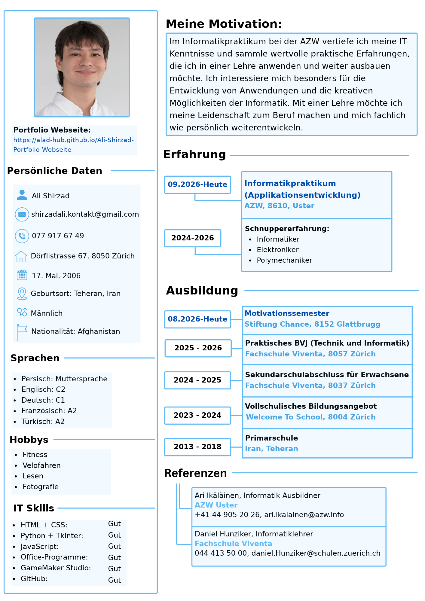

Gemeinsam mit meinen Kollegen am AZW habe ich mit GameMaker das Windows-Spiel UltraRain entwickelt. Zusätzlich habe ich einige weitere einfache Spiele für den Browser und mit Python sowie ein Spiel für Mobilgeräte programmiert.
In einem Webentwicklungskurs habe ich die Grundlagen von HTML, CSS und JavaScript gelernt. Anschliessend habe ich mein Wissen zu Hause selbstständig vertieft und diese Webseite erstellt.
Mit Python und der GUI-Bibliothek Tkinter habe ich ein Spiel und einen einfachen Taschenrechner entwickelt. Mit Thunkable habe ich ausserdem ein mobiles Spiel erstellt und gelernt, wie sich mobile Apps entwickeln lassen.
Im Elektrotechnikunterricht am BVJ habe ich gelernt, kleine elektronische Bauteile wie LEDs und Mikrocontroller zu löten. Im Informatikunterricht haben wir mit Arduino-Mikrocontrollern gearbeitet und damit Roboter, LEDs und verschiedene Sensoren programmiert.
Mein Lautsprecher-Projekt ansehen →